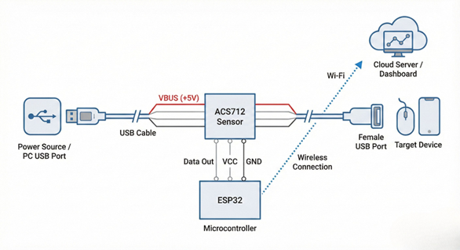
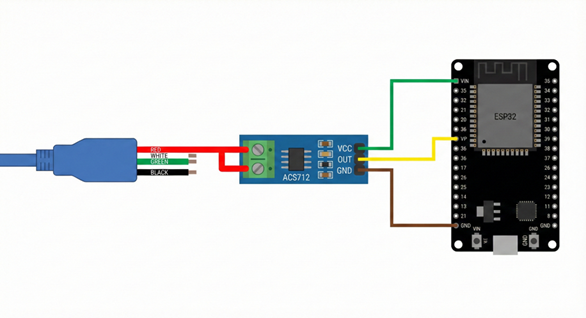
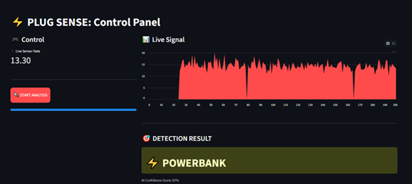
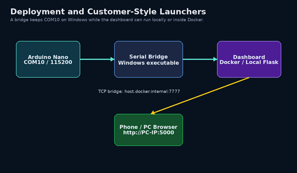
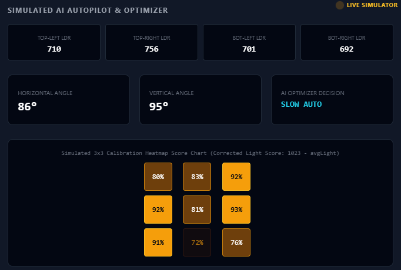
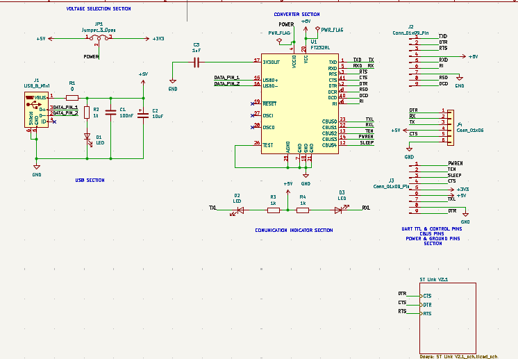
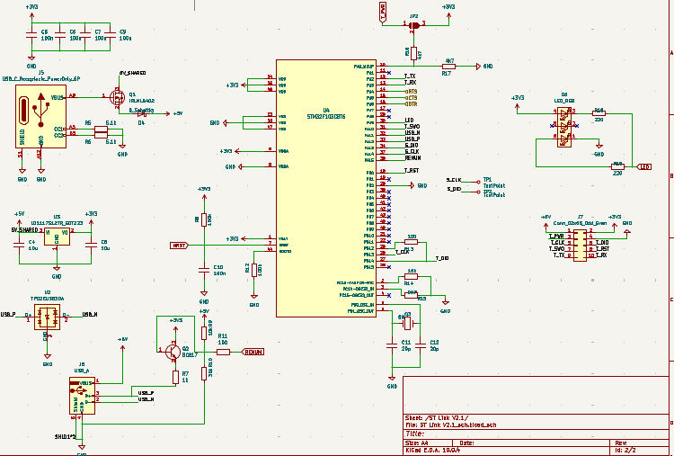
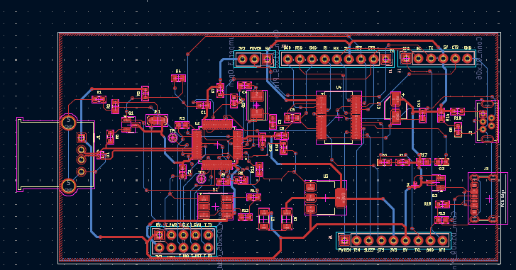
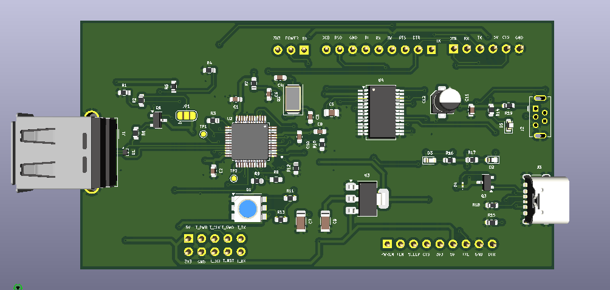

Bridging Physical Layer Realities with Intelligent Control
Electrical and Electronics Engineering graduate from Altınbaş University. This portfolio serves as an interactive, production-ready showcase of my graduation projects and industrial R&D board designs. No simulated mockups—only raw schematics, system topologies, and dashboard previews from actual functional prototypes.
Core Tech Spectrum
1. PLUG SENSE: TinyML USB Fingerprinting & Anomaly Detection
Side-Channel Power Analysis for Non-Intrusive Load Monitoring (NILM)
System Flow Topology

Isolated HW Schematic

Production Dashboard

Technical Design Specifications
Universal Serial Bus (USB) ports are highly vulnerable to hardware-based impersonation attacks like "BadUSB." Attackers spoof standard digital descriptors (Vendor ID/Product ID), tricking operating systems into trusting the device. PLUG SENSE implements physical-layer validation by mapping out the direct current (DC) signature of connected loads.
- Edge Layer Acquisition: An ESP32 dual-core processor executes a buffered sampling cycle via its internal 12-bit ADC, reading the isolated analog output of an ACS712-05B Hall-Effect sensor module.
- Galvanic Isolation Protection: The physical wiring topology routes the cut VBUS (+5V) line directly through the sensor's internal copper conduction path, preserving the Data+ and Data- lines untouched while providing up to 2.1 kVRMS electrical isolation.
- TinyML Engine: Embedded neural network classifier trained via Edge Impulse. The model classifies complex time-series current patterns at a 10 Hz telemetry interval.
- Microservices Architecture: The ESP32 pushes serialized JSON payloads via Wi-Fi (HTTP POST) to a Dockerized server running a pythonic REST API and Streamlit user interface.
Target Waveform Fingerprints
2. SolarX: AI-Supervised Dual-Axis Solar Tracking System
Energy-Aware Smart Autopilot & Closed-Loop Actuator Supervisor
System Architecture & Command Protocol

Production Heatmap & Dashboard Control

Technical Design Specifications
Typical solar tracking platforms blindly orient toward the brightest light, risking excessive mechanical jitter, high cable strain, and battery drain under unstable skies. SolarX introduces a high-level, energy-aware supervisory AI dashboard that acts on top of a deterministic real-time firmware layer.
- Low-Level Execution: An Arduino Nano reads analog levels from four-corner LDR sensor dividers, calculating left-right and top-bottom gradients to adjust horizontal and vertical hobby servo angles within a calibrated safe physical range of 75° to 105°.
- Corrected Light Scoring: Due to inverted resistor characteristics of the physical LDR voltage divider, the supervisory layer converts the raw average light readings to true, linear brightness:
B = 1023 - avgLight
- AI Autopilot & Net Energy Optimizer: Compares optical yield expectations directly with actuator stress metrics. The supervisor computes movement costs, cable-strain fatigue, and shadow risks before deciding to issue commands:
Net Benefit = Expected Light Gain - Movement Cost
- Cable-Safe AI Scan: Initiates a structured 3x3 sweep over safe 82°, 90°, and 98° grid intersections, displaying an instant 2D brightness heatmap and executing a closed-loop positioning return to the absolute optimal coordinate.
Control Protocol Commands
AUTO: Classical closed-loop LDR-based tracking.
STOP: Forces active hold, keeping serial telemetry streaming.
CENTER: Sweeps both servos instantly to reference 90°.
AI AUTOPILOT: Enables supervisor energy optimizations.
GOTO,H,V: Positions actuators to requested coordinates.
3. Professional USB-UART & ST-Link V2.1 Debugger
Multi-Layer Hardware Debug Module featuring PNP Software Re-Enumeration
FT232RL Schematic Layer

STM32 ST-Link Core

2D PCB Routing Layout (KiCad)

3D PCB Physical Render (KiCad)

Technical Design Specifications
An advanced, production-grade R&D engineering debug tool integrating dual high-speed protocol interfaces on a single PCB layout. The board combines an industry-standard serial link with a dedicated flashing and trace debugger core.
- USB-UART Layer (FT232RL): Engineered around the industrial FT232RL (U1) USB bridge chip. Includes a physical 3-pin jumper (JP1) for manual VCCIO selection (3.3V or 5V) to match target system logic. The Mini USB input (J1) power rail integrates a 0Ω series protection resistor (R1), a power status LED (D1) with a 1kΩ series resistor (R2), and decoupling capacitors: 100nF (C1) and 10µF (C2) to suppress voltage ripple. FT232RL's 3V3OUT pin features a 1µF (C3) dekuplaj capacitor. CBUS0 and CBUS1 lines route to TX/RX status LEDs (D2, D3) through 1kΩ resistors (R3, R4), and full hardware flow control signals are exposed to expansion headers J3 (Conn_01x09).
- ST-Link V2.1 Layer (STM32F103C8T6): Employs an STM32F103C8T6 (U4) ARM Cortex-M3 processor. Features an integrated USB Type-C connector J5 (USB_C_Receptacle_PowerOnly_6P) equipped with 5.1kΩ pull-down resistors (R5, R6) on CC1 and CC2 lines to signal sink device behavior. VBUS input line features an IRLML6402 PMOS (Q1) and a Schottky diode (D4) for reverse polarity protection. The digital data lines (USB_P/USB_N) feature a TPD2EUSB30A (U2) ESD protection array.
- USB Re-Enumeration Subsystem: Employs a BC817 NPN transistor (Q2) connected between the +3V3 rail and the USB_P (D+) line via a 1kΩ resistor (R7). The transistor's base bacaği is controlled by the STM32's PA15 (RENUM) pin via a 100Ω series resistor (R11), biased by a 10kΩ pull-up (R9) to +5V and a 36kΩ pull-down (R10) to GND to dynamically trigger software-reset cycles.
- Clock, Reset, & Power Regulation: The main 3.3V rail is supplied by an LD1117S12TR_SOT223 (U3) LDO regulator, stabilized with 10µF capacitors on both input (C4) and output (C8), with the output rail (+3V3) decoupled using four parallel 100nF capacitors (C5, C6, C7, C9). The STM32's clock is driven by an 8 MHz crystal (Q3) with 20pF load capacitors (C11, C12). The NRST pin is pulled up to +3V3 via a 100kΩ resistor (RB) with a 100nF (C10) capacitor to GND, while BOOT0 is tied to GND via a 100kΩ pulldown (R12). Features an RGB LED (D5) driven through 220Ω resistors (R18, R19), and a 3-pin power selection jumper (JP2) with 4k7 resistors (R16, R17).
Hardware Architecture Specs
VBUS Filter Caps: 100nF (C1) & 10µF (C2) on Mini USB.
CC1/CC2 Pull-Downs: R5, R6 (5.1kΩ) on Type-C J5.
Re-Enumeration NPN: Q2 (BC817) & Emitter R7 (1kΩ).
Base Drive network: R11 (100Ω), R9 (10kΩ), R10 (36kΩ).
Voltage Regulation: LD1117S12TR (U3) with 10µF (C4, C8).